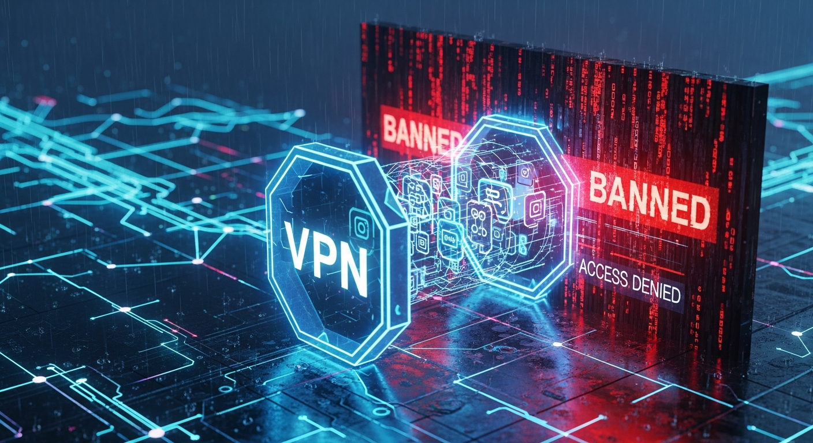

In an increasingly interconnected world, the promise of global content at our fingertips often collides with the frustrating reality of digital borders. Geo-restrictions, content licensing agreements, and national censorship policies erect invisible barriers, preventing users from accessing the full spectrum of information, entertainment, and services available online. Whether you're a cinephile eager to watch a show exclusive to another region, a news enthusiast seeking unbiased reporting from abroad, or a digital nomad needing to access home country services, these digital walls can feel insurmountable. This article delves into the most effective and secure strategy for transcending these digital boundaries: the Virtual Private Network (VPN). Far from just a tool for anonymity, a VPN, when used strategically and responsibly, becomes your passport to a truly global internet, allowing you to bypass restrictions without compromising your online safety or risking punitive actions. We will explore not just the "how" but also the "why" and "what to avoid," equipping you with the knowledge to navigate the global content landscape with confidence and unparalleled freedom.
The concept of a truly global internet, where information flows freely across all geographical boundaries, is an appealing ideal that, in practice, remains largely unfulfilled. Instead, users frequently encounter the frustrating phenomenon of geo-restrictions and censorship, creating a digital divide that limits access based on physical location. Understanding the fundamental reasons behind these restrictions is the first step towards effectively circumventing them. At its core, geo-restriction is a method employed by content providers, streaming services, and websites to control who can access their material based on their geographical IP address. This is predominantly driven by licensing agreements, where content creators sell distribution rights for specific regions. A major film studio, for instance, might license the streaming rights for a particular movie to Netflix in North America, Hulu in Europe, and a local broadcaster in Asia. To honor these complex and often lucrative contracts, streaming platforms must implement robust systems to ensure that content is only accessible to users within their licensed territories. Failure to do so could result in hefty fines, legal battles, and the loss of future licensing opportunities.
Beyond commercial interests, national censorship represents another significant barrier to global content access. Governments in various countries impose strict controls over the information citizens can access online, often citing reasons of national security, public morality, or political stability. These censorship regimes can manifest in various forms, including the outright blocking of specific websites, social media platforms, or news outlets deemed subversive or undesirable. In some cases, entire categories of content, such as those related to certain political ideologies, religious views, or social movements, are made inaccessible. The methods for enforcing censorship range from DNS blocking, where requests to specific domain names are simply not resolved, to deep packet inspection (DPI), which analyzes the content of data packets to identify and block prohibited information. These measures create isolated digital environments, preventing citizens from engaging with diverse perspectives or accessing unfiltered global news and information. The impact on individuals is profound, limiting educational opportunities, stifling free expression, and creating echo chambers that reinforce state-sanctioned narratives.
The mechanisms by which these restrictions are enforced are primarily technical. The most common method involves checking a user's IP address. An IP address is a unique numerical label assigned to every device connected to a computer network that uses the Internet Protocol for communication. This address contains information about your approximate geographical location, allowing websites and services to identify your country, region, and even city. When you attempt to access geo-restricted content, the service checks your IP address against its database of allowed regions. If your IP address falls outside the permitted zones, access is denied, often accompanied by a message like "Content not available in your region" or "Access denied." More sophisticated systems might also employ DNS blocking, where your internet service provider (ISP) prevents your device from resolving the IP address of a restricted website. Some services even analyze other data points, such as browser language settings, time zones, or even payment method billing addresses, to cross-verify your location and detect attempts to bypass restrictions. This intricate web of technical and legal controls underscores the necessity for a robust and intelligent strategy to truly unlock the global internet, making the VPN not just a convenience, but a critical tool for digital empowerment.
At the heart of accessing global content securely and without fear of reprisal lies the Virtual Private Network, or VPN. Far more than a simple anonymity tool, a VPN creates a secure, encrypted tunnel between your device and a server operated by the VPN provider, effectively rerouting your internet traffic and masking your true location. When you connect to a VPN, your device establishes an encrypted connection to one of the VPN provider's servers, which can be located anywhere in the world. From that point onward, all your internet traffic – every website you visit, every file you download, every streaming service you access – travels through this secure tunnel. Instead of your real IP address being visible to the websites and services you interact with, they only see the IP address of the VPN server. This fundamental mechanism is what enables users to bypass geo-restrictions, as it makes it appear as though you are browsing from the location of the VPN server, regardless of your actual physical whereabouts. If you connect to a VPN server in the United States, for example, any website you visit will perceive your connection as originating from the U.S., granting you access to content exclusive to that region.
The benefits of a VPN extend far beyond merely changing your apparent location. Security and privacy are paramount considerations that are intrinsically linked to the VPN's operation. The "private" in Virtual Private Network refers to the robust encryption applied to all data traversing the VPN tunnel. Modern VPNs typically employ strong encryption standards, such as AES-256, which is the same level of encryption used by governments and military organizations to protect sensitive information. This encryption scrambles your data, making it unreadable to anyone who might intercept it, including your Internet Service Provider (ISP), government surveillance agencies, or malicious actors on public Wi-Fi networks. This means your online activities – your browsing history, downloads, and communications – remain private and protected from prying eyes. Furthermore, a reputable VPN provider will adhere to a strict "no-logs" policy, meaning they do not record your online activities, connection timestamps, or IP addresses. This commitment to not storing user data is crucial for privacy, as it ensures that even if compelled by legal means, the VPN provider has no information about your specific online actions to hand over.
The technical underpinnings of a VPN involve several key components, notably VPN protocols. These protocols dictate how the encrypted tunnel is established and maintained, influencing factors like speed, security, and compatibility. Popular and secure protocols include OpenVPN, WireGuard, and IKEv2/IPsec. OpenVPN is an open-source protocol renowned for its high security and configurability, making it a favorite among privacy advocates, though it can sometimes be slower than newer alternatives. WireGuard is a more modern protocol gaining rapid traction due to its significantly smaller codebase, which makes it faster, more efficient, and easier to audit for security vulnerabilities, offering excellent speeds without compromising security. IKEv2/IPsec is another robust protocol, often praised for its stability and ability to seamlessly re-establish connections when switching between networks, making it ideal for mobile users. Understanding these protocols helps in selecting a VPN that best fits your needs, balancing the critical aspects of speed for streaming and downloading with the uncompromisable need for robust security. By creating an encrypted, anonymous pathway through the internet, a VPN truly empowers users to reclaim their digital sovereignty, ensuring both access to global content and the protection of their personal online footprint.
The market for Virtual Private Networks is saturated with countless providers, each promising unparalleled speed, security, and access. However, not all VPNs are created equal, especially when your primary goal is to reliably access global content without getting banned. Making an informed choice requires a meticulous evaluation of several critical factors that directly impact a VPN's effectiveness in bypassing geo-restrictions and maintaining your anonymity. The first and arguably most important criterion is the size and distribution of the VPN provider's server network. To access content from various regions, you need a VPN with servers strategically located in those specific countries. A vast network not only offers more choices for bypassing restrictions but also helps in finding less congested servers, leading to better speeds and reliability. Look for providers with a strong presence in regions known for desirable content, such as the United States, United Kingdom, Canada, Japan, and various European countries. The sheer number of servers within each country is also important, as it increases the likelihood of finding an IP address that hasn't been blacklisted by streaming services.
Beyond server count, the quality of a VPN's security infrastructure is non-negotiable. Robust encryption, typically AES-256, is fundamental for protecting your data from interception. Furthermore, a strict no-logs policy is paramount. A reputable VPN should explicitly state that it does not collect, store, or share any logs of your online activities, connection timestamps, or IP addresses. This commitment is often backed by independent audits, which provide verifiable proof of their adherence to privacy policies. Features like a kill switch are also crucial; this automatically disconnects your internet if the VPN connection drops unexpectedly, preventing your real IP address from being exposed. DNS leak protection is another vital safeguard, ensuring that your DNS requests are routed through the VPN's encrypted tunnel rather than your ISP's servers, which could otherwise reveal your location. Without these foundational security measures, even if you gain access to content, your privacy could be compromised, potentially leading to unwanted attention or data breaches.
When specifically targeting geo-restricted content, certain specialized features become highly advantageous. Obfuscated servers, also known as stealth servers or cloaking technology, are designed to make your VPN traffic appear as regular internet traffic. This is particularly effective in regions with heavy censorship or against sophisticated VPN-detection systems employed by major streaming platforms. By disguising the VPN connection, these servers make it much harder for services to identify and block your access. Another valuable feature, particularly for those who need a consistent IP address for specific services, is the option for a dedicated IP address. While most VPNs assign a shared IP address that changes frequently, a dedicated IP provides you with a unique IP address that only you use. This can reduce the chances of your IP being flagged as a VPN IP, as it's not shared by hundreds or thousands of other users. Finally, consider factors like speed, which is critical for smooth streaming in high definition, and device compatibility, ensuring the VPN works seamlessly across all your devices, from desktops to smartphones and even routers. Customer support, pricing models (including money-back guarantees), and the overall reputation of the provider, often reflected in user reviews and expert analyses, should also play a significant role in your decision-making process. By meticulously weighing these elements, you can select a VPN that not only grants you access to the world's content but does so with unwavering security and reliability, transforming your digital experience from restricted to truly global.
Turn your scripts into professional videos automatically. Use code PAVEL20 for 20% OFF!
START CREATING WITH PICTORYWhile the fundamental act of connecting to a VPN server provides a robust layer of anonymity and geo-unblocking capabilities, the discerning user understands that the true power of a VPN lies in leveraging its advanced features and employing strategic usage patterns. Moving beyond basic anonymity, these advanced strategies are designed to enhance security, optimize performance, and most importantly, increase your chances of successfully accessing even the most aggressively geo-restricted content without detection. One such invaluable feature is Split Tunneling. This allows you to selectively route certain applications or websites through the VPN tunnel while others access the internet directly. For instance, you could route your streaming application through a VPN server in another country to access its exclusive library, while your banking app or local news website uses your regular, un-VPN'd connection. This not only optimizes bandwidth by only encrypting necessary traffic but also ensures that services requiring your local IP address function correctly without interference from the VPN. It's a powerful tool for maintaining both global access and local functionality simultaneously.
For users prioritizing maximum security and anonymity, particularly in environments with high surveillance or strict censorship, Multi-Hop VPNs, also known as Double VPNs, offer an enhanced layer of protection. Instead of routing your traffic through a single VPN server, a multi-hop configuration routes it through two or even more servers in different locations. This means your data is encrypted once, sent to the first VPN server, re-encrypted, and then sent to a second VPN server before finally reaching its destination. The advantage here is that even if the exit server (the last VPN server your traffic passes through) were compromised, your real IP address would still be hidden by the first server. This significantly complicates the process of tracing your online activities back to you, making it an excellent choice for journalists, activists, or anyone operating in highly sensitive digital environments. While it often comes with a slight speed reduction due to the double encryption and longer routing path, the enhanced security benefits are often worth the trade-off for critical applications.
Perhaps the most critical advanced strategy for bypassing sophisticated geo-blocking systems, especially those employed by major streaming platforms and state censors, involves Obfuscation Technology. Many content providers actively detect and block known VPN IP addresses. Obfuscated servers are specifically engineered to make VPN traffic appear as regular, unencrypted internet traffic. They achieve this by adding an extra layer of encryption or by modifying the data packets to resemble standard HTTPS traffic. This technique is incredibly effective in circumventing deep packet inspection (DPI), which is used to identify and block VPN connections. When a VPN offers obfuscation, it dramatically increases your chances of accessing services like Netflix, BBC iPlayer, or Hulu, which are notoriously aggressive in their VPN detection efforts. Furthermore, integrating DNS over HTTPS (DoH) or DNS over TLS (DoT) into your VPN strategy can prevent DNS leaks, which could otherwise expose your real location even when connected to a VPN. These protocols encrypt your DNS queries, ensuring they remain private and secure, thereby closing a potential vulnerability that could compromise your anonymity. Finally, for comprehensive home network protection, configuring a VPN directly on your router ensures that every device connected to your home network, including smart TVs, gaming consoles, and IoT devices that might not natively support VPN apps, benefits from the VPN's security and geo-unblocking capabilities. This creates a seamless, always-on protective layer for all your digital interactions, elevating your global content access strategy to an entirely new level of sophistication and security.
While a robust VPN is your primary tool for accessing global content, the landscape of geo-restriction enforcement is a constant cat-and-mouse game. Major streaming services and content providers invest heavily in sophisticated VPN detection technologies, often leading to the frustrating "VPN detected" error. To truly access content without getting banned, it's crucial to adopt best practices that minimize your digital footprint and make your VPN usage as undetectable as possible. The first step involves understanding why you might be detected. Services often maintain extensive databases of known VPN server IP addresses. When a large number of users access a service from the same IP address within a short period, it's a strong indicator of VPN usage, leading to that IP being blacklisted. Therefore, selecting a VPN provider that actively rotates its IP addresses, offers a large pool of IP addresses, and crucially, provides obfuscated servers, is paramount. Obfuscation technology, as discussed, is designed to camouflage your VPN traffic, making it appear as regular internet traffic and thus much harder to detect by deep packet inspection (DPI) systems.
Beyond selecting the right VPN features, your usage habits play a significant role. Always ensure your VPN is active and connected to your desired server *before* you open any browser or application that accesses geo-restricted content. This prevents any initial DNS requests or IP address checks from revealing your true location. Once connected, it's a good practice to clear your browser's cache and cookies. Websites often store cookies that contain information about your previous sessions, including your actual location from prior visits. Even with a VPN active, these stored cookies could potentially reveal your true geographical origin, triggering a red flag. A clean slate ensures that the service only sees the VPN server's IP address and location. Similarly, avoid using public DNS servers (like Google DNS or Cloudflare DNS) if your VPN isn't configured to force all DNS queries through its own encrypted tunnel. A DNS leak could expose your real location, even if your IP address is masked by the VPN.
Consistency is key. If you're trying to access content from a specific region, try to stick to the same VPN server or at least the same country's server pool. Constantly switching between different VPN servers or countries can sometimes raise suspicion, as it's not typical user behavior. For those encountering persistent issues, a dedicated IP address can be a game-changer. While it usually comes at an extra cost, a dedicated IP is assigned exclusively to you, meaning it's less likely to be flagged as a VPN IP because it's not shared by thousands of other users. This makes your connection appear more like a regular residential connection. Furthermore, stay vigilant about updates from your VPN provider. The cat-and-mouse game means VPNs are constantly evolving their technology to bypass new detection methods. Keeping your VPN client software up to date ensures you benefit from the latest security patches and obfuscation techniques. Finally, remember that even with the best strategies, some services might occasionally succeed in blocking a VPN IP. In such cases, the best approach is often to simply try a different server within the same country, or even contact your VPN's customer support for guidance on which servers are currently most effective for specific services. By combining a high-quality VPN with these meticulous best practices, you significantly enhance your ability to stream and browse global content seamlessly and without unwanted interruptions.
Achieving truly seamless global content access without the constant threat of detection requires more than just a basic VPN subscription; it demands a strategic combination of robust tools and intelligent solutions. The market offers a diverse array of options, each with its strengths and specific use cases, which, when understood and deployed effectively, can transform your digital experience. At the forefront are the premium VPN providers, whose offerings go far beyond simple IP masking. Services like ExpressVPN, NordVPN, Surfshark, and ProtonVPN stand out due to their extensive global server networks, advanced security features, and dedicated efforts to bypass geo-restrictions. ExpressVPN, for instance, is often lauded for its consistently fast speeds and reliability in unblocking major streaming platforms, making it a go-to for HD streaming. NordVPN, with its array of specialized servers including Double VPN and Obfuscated Servers, offers enhanced security and a strong track record against censorship. Surfshark provides excellent value with unlimited simultaneous connections, making it ideal for households, while ProtonVPN, known for its strong privacy stance and Secure Core architecture, appeals to those prioritizing maximum anonymity and security, often with a free tier option for basic use. When evaluating these, look for their commitment to no-logs policies, independent audits, kill switch functionality, and DNS leak protection, as these are non-negotiable for secure and undetectable access.
While VPNs are the cornerstone, other tools can complement or even serve as alternatives in specific scenarios. Smart DNS services, for example, offer a different approach to geo-unblocking, primarily for streaming. Unlike a VPN, a Smart DNS service doesn't encrypt your internet traffic or change your IP address. Instead, it reroutes only the specific parts of your traffic that reveal your location to geo-restricted services. This means you get full streaming speed without the overhead of encryption, making it excellent for devices... and implement these strategies to ensure long-term success.
In summary, staying ahead of these trends is the key to business longevity and security. By following this guide, you maximize your growth and ensure a stable digital future.
Don't wait for the headlines. Our Private Telegram Channel delivers real-time AI security updates and digital wealth strategies before they go viral. Stay protected. Stay ahead.
⚡ JOIN THE 1% NOW